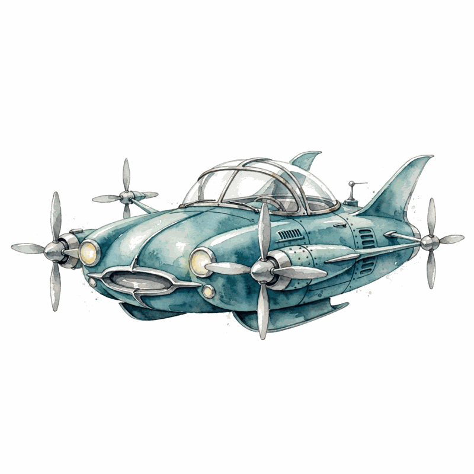

Conversations with Tyler · Episode companion
Peter Thiel on Stagnation, Innovation, and What Not To Name Your Company
Recorded live at George Mason University in April 2015, months after Zero to One became a bestseller, this episode is Thiel at his most expansive: the stagnation of atoms, the sclerosis of government, the art of naming companies, and a lightning round on everything from Keynes to death.
they promised us flying cars and all we got is 140 characters
Tyler Cowen, quoting Thiel's famous line · ~00:01
Stagnation in atoms, not bits
~00:00
The central claim of the episode: innovation stalled in the world of atoms while it raced ahead in the world of bits. Computers got faster, phones got smarter, but supersonic travel, space flight, and energy saw little of the promised progress. Thiel ties the two-track story to regulation. The bits economy grew up largely unregulated, while atoms met the full weight of the state: to ship a new software product costs perhaps $100,000, but to get a new drug through the FDA costs roughly a billion dollars.
He also introduces hysteresis, borrowed from economics. Stagnation is sticky in both directions. In a stagnant equilibrium, startups aim low, funders fund little, and talent drifts to finance. Break the spell with a real breakthrough, and the cycle can turn virtuous: ambition, capital, and talent feed one another again.
Two tracks of innovation since 1970
Stylized summary of Thiel's argument. Bar lengths are illustrative, not measured data.

The boundary of bits and atoms
~00:04
Cowen presses Thiel on which breakthroughs might actually arrive. Thiel is cautious. Artificial intelligence, he says, is slightly overhyped, further away than the consensus believes. Biotech could do more, but regulation chokes it. Self-driving cars are real and coming, but even success there would replace at most about one percent of the workforce.
Then a sharper move: Thiel rejects the premise that the future is a number to forecast or a movie to watch. Forecasting treats the future as something that happens to us. His view is that the future gets built by people with plans and agency, not predicted by people with models. The disagreement with the Kurzweil-style exponential crowd is not about dates but about agency.
The government that built Apollo
~00:06
Thiel traces American institutional decline to the fading of mainline Protestantism, which he credits with building the great universities, hospitals, and civic institutions, then leaving behind a void no creed filled. In the 1930s and 1940s, he argues, government had real technocratic competence. The Manhattan Project and Apollo were thinkable. Today, he says, a letter from Einstein would be lost in the White House mail room, and neither project could happen.
a letter from Einstein to the White House would get lost in the mail room today
Peter Thiel · ~00:06
The one exception he allows says a great deal: Elon Musk, doing with SpaceX and Tesla what states no longer attempt. In Thiel's telling, Musk is the bridge figure between the world of bits and the world of atoms, the founder willing to build physical things at civilizational scale.
Peak oil
~00:09
Cowen asks about the collapse in energy prices. Thiel reframes the question. The energy story of the 2010s was not about prices but about technology: hydraulic fracturing cracked open resources the experts wrote off. He puts the scale of the fracking bet at roughly $450 billion of investment and offers it as a case study in how the world underestimated a physical technology.
Asked what oil at $50 a barrel, down from $100, changes, he stays unimpressed by price talk. Prices are the surface. The deeper question is whether the industry keeps innovating past the cheap gains, or whether the low-hanging fruit of fracking gets picked and the atom world stalls again.
The fracking bet, as Thiel frames it
Figures are Thiel's in-conversation estimates, April 2015.
Tell me something true
~00:10
The famous interview question from Zero to One gets its live outing: tell me something true that very few people agree with you on. Thiel volunteers his own entry first, and it is an institutional one. The American university system is badly broken, he says, and the striking thing is that this is not even a heterodox or controversial idea anymore. When a TechCrunch writer framed the claim as super controversial, about 70 percent of the roughly 350 comments agreed with him.
He also admits a borderline answer: that the monopoly idea, the core of his book, might not count as a true secret, since he wrote a whole book about it. The question works as a filter either way. It separates people who repeat the consensus from people who have actually thought.
Original sin
~00:12
Cowen offers a model of Thiel, borrowed from Nietzsche via Girard: that Thiel locates original sin not in the individual but in society, in mimetic crowds and status games. Thiel accepts the frame and adds his biography. He describes growing up with a quasi-conversion experience away from the tracked life: Stanford, a top law firm, then the escape after seven months and three days, which he calls an escape from Alcatraz.
On Asperger's and founders, he ventures armchair psychology: the world of social convention rewards conformity, and people less attuned to those signals sometimes see further. The eccentric, asocial scientist is his endangered species, the figure institutions now select against.
Stubborn and open-minded
~00:20
Hiring for the Thiel Fellowship means hunting for Zen contradictions. The ideal fellow is stubborn and open-minded at once, traits that sit nearly 180 degrees apart. (Thiel jokes it might be 175 degrees, then corrects himself to 179.5.) A good founder needs the conviction to defy the world and the flexibility to be wrong.
He extends the point to company formation itself. There is a prehistory to every great company, a set of relationships and shared convictions that predate the legal entity. PayPal worked because the founders already knew each other and already disagreed with the world in the same direction.
Do not be an entrepreneur
~00:22
Cowen proposes a Straussian reading of Zero to One: properly understood, the book tells most readers they should not be entrepreneurs. Thiel half-agrees. Entrepreneurship has become a vague, fashionable word. His real position is directional: the world needs more good businesses and fewer bad ones, and most people who call themselves entrepreneurs start the wrong kind.
On bubbles, he is specific. The late 1990s dot-com mania was a genuine technology bubble, and the present is nothing like it. Technology stocks trade at reasonable multiples. The mania, if any, sits elsewhere: in finance, in government debt, in the credentialed tracks.
Cowen then asks for general career advice, and Thiel refuses the genre. There are no general answers, only specific ones. To the worker with zero marginal product, the advice is to stop being the person the market values at zero. To the shortage of IT talent, his answer is that the shortage is real and the training pipeline is broken. Petroleum engineering gets a contrarian nod as an unfashionable field with real demand.
Is culture stagnating too
~00:26
The stagnation thesis extends to culture. Hollywood, Thiel argues, makes fewer great movies than it did, recycling franchises instead of taking risks. Cowen counters with television: the great American art form of the 2010s might be the long-form series, Game of Thrones included, where the risk-taking migrated when film stopped.
Thiel grants the partial exception but holds the line. A culture that cannot renew its forms is a stagnant one, whatever the medium. The question he keeps returning to is whether any domain still produces the new, or whether every field now remixes the old.
Japan
~00:27
Thiel calls Japan the least conformist country in the world, a deliberate provocation against the Western stereotype of Japanese groupthink. His evidence is economic. Japan was fifteen years ahead in seeing that finance-driven globalization would not save anyone, and it quietly converted its golf courses into solar farms while the West kept building financial instruments.
The deeper point is about contrarian indicators. Countries and people that look strange to the consensus sometimes turn out to be early. Japan's long deflation and its inward focus, in Thiel's telling, were not failure but a head start on the post-globalization world.
Overrated or underrated
~00:29
The lightning round is the episode's set piece. Keynes: massively overrated, a fair-weather theory for the long 25-year finance boom from 1982 to 2007. New York City: overrated. Thiel's geography trade is a long and short. Long California, short New York. Long Texas, short Virginia. The axis is globalization. New York and Washington are leveraged to a world order that peaked. California and Texas are inward-looking and will outlast it.
With hindsight, he bets, we will see 2007 as the peak year of globalization, the way 1913 was the peak of the last one. The lucky difference: no world war followed, at least not yet. Japan gets a long rating as relatively underrated. France he would not be long, though even France may be underrated because its punitive tax rates will probably fall someday.
China is the hard one. The growth story is tied to globalization, but the capital controls and the party-state make it separate, and Thiel notes that Americans ask about China far less than they did in 2005. His suspicion: we underestimate China, but it is very hard to invest there unless you are a well-connected party member, which he is not.
Brazil gets the longest answer. Thiel counts four moments of hyper-bullishness over 150 years, each a false dawn, each tied to Brazil linking into globalization and then disappointing. The emblem is OGX, the energy company whose founder was worth $30 billion in 2011 and minus $1 billion a few years later, with a McLaren parked in his Rio living room. When Thiel visited, the newly divorced founder told him:
I can now park my car wherever I want.
The founder of OGX, as quoted by Thiel · ~00:33
Thiel hedges the whole anecdote himself: maybe the oil never existed, maybe it was a giant fraud, very hard to tell. The pattern he trusts is the pattern: optimism arrives with globalization, disappointment arrives with reality.
The overrated versus underrated scoreboard
Thiel's live ratings, April 2015. Not investment advice.
What not to name your company
~00:37
The title chapter. Thiel holds that company names are slightly predictive of success or failure, an aesthetic theory he believes strongly. PayPal was a friendly name, the friend that helps you pay. Napster was a bad name: you nap some music, you nap a kid, and it sounds like a bad thing to do. Small wonder, he jokes, that the government shut it down within a few years.
In the sharing economy he prefers Airbnb to Uber by a wide margin. Airbnb sounds like an innocent virtual bed and breakfast, light and nonthreatening. Uber sounds like a bad name from Germany sometime in the 1930s, and he asks the audience what exactly the company thinks it is above: maybe the law. From a regulatory perspective, the innocent name is a vastly better name.
The social network version is the richest. Both reading and writing happen on every social network, and unlike real life you must write before you read. Over time reading dominates writing. Facebook was about learning about real people around you, with real identities at Harvard. MySpace began among wannabe actors in Los Angeles, fictional narratives about themselves. Since reading dominates writing, Facebook would ultimately dominate MySpace. The whole product arc was implicit in the names.
Asked about the United States as a name, Thiel admits we are too embedded in the history to judge it, but confesses sympathy for the 19th-century spelling with a lowercase u: the united states, a humbler construction.
E4, D4, and German pessimism
~00:40
In chess, D4 is probably marginally better now, because defenses to E4 like the Berlin have become very hard to break. Thiel still always plays E4. It is the attacking move, and below world-champion level he enjoys raising the risk and volatility of the game.
Born in Germany, speaking German at home for his first twelve years, Thiel frames himself as a mix of two opposite cultures. California is super-optimistic but somewhat desperate: 20,000 people a year move to Los Angeles to become movie stars and maybe 20 make it. Germany is incredibly pessimistic but very comfortable. German pessimism, he says, is a helpful corrective amid Silicon Valley's hyper-optimism.
The synthesis: extreme pessimism and extreme optimism are both unhealthy, and they converge on the same outcome, doing nothing. Extreme pessimism says there is no point in acting. Extreme optimism says there is no need. The healthy attitudes are the mild versions, and Thiel averages out somewhere in the middle.
When will you die
~00:43
Cowen asks for a maximum likelihood estimate of Thiel's own death. Thiel refuses to treat it as fixed: it depends on what he does and what he gets others to do. The straight-line forecast uses the long trend, life expectancy rising 2.2 to 2.5 years per decade since 1840, which puts him in his early to mid-90s, with perhaps ten more years in the upper case, somewhere between 100 and 110.
The honest caveats follow. Early gains came from the young, and those are exhausted. Future gains must come from older people living longer and healthier. If the world stays stagnant, expect little more than the baseline. If things accelerate, much more is possible.
The straight-line forecast for one life
Thiel's arithmetic, in conversation: 2.2 to 2.5 years per decade since 1840.
Lord of the Rings and the New Testament
~00:45
His favorite novel is Lord of the Rings. The more intellectual pick is Bulgakov's The Master and Margarita, where the devil shows up in Stalinist Russia, gives everyone what they want, and everything goes haywire, while nobody believes he is real.
On the Testaments, Thiel sides with the New Testament and disputes Cowen's preference for the Hebrew Bible's dialectic. Christ, he argues, is a complex and ambiguous figure, and almost everything he said was something true that most people did not agree on. The parables were a necessity: direct speech courted danger, a Straussian Christ speaking indirectly because the authorities would otherwise kill him sooner. He cites Locke's Reasonableness of Christianity for the same reading.
Asked what he wants to think about in the next year, Thiel refuses the top-down agenda. His method is serendipitous: talk to remarkable people, find great technologies and entrepreneurs, and let the agenda emerge. The overarching goal stays fixed: get out of the stagnation by helping people start companies that change the world.
Long substance, short status
~00:49
Cowen asks what advice Thiel would give the Institute for Humane Studies and the Mercatus Center, treated as a startup. The answer is one line, repeated twice for emphasis:
I would always be long substance, short status.
Peter Thiel · ~00:49
The temptation in academia is prestige: respectability within the university or the broader audience. Respectability always comes at the price of softening the edges and modulating what you say. Substance over status is the single overarching theme he would keep.
Vertical versus horizontal
~00:51
The audience Q and A opens on Zero to One's core distinction. Horizontal progress is globalization, copying what works, going from one to n. Vertical progress is technology, doing new things, going from zero to one. There is no formula for vertical progress. Globalization has something scientific about it. The history of technology is deeply unscientific, because every moment happens only once. Science starts with the number two. The next great founder will not build another social network or another search engine.
The practical version: be passionate about something you are good at that other people are not doing. Line up those three and you have a start.
On nonprofits, the contrarian question adapts. The contrarian business question asks what great businesses nobody starts. The contrarian nonprofit question asks what great causes are deeply unpopular. Thiel says he deflects donation requests by asking why the cause is popular or unpopular, because he only wants to fund unpopular causes. Popular causes are already funded. The Zen paradox: pushing a good but unpopular cause has enormous impact, but it is very hard to raise money for it.
The counterfactual sense of mission matters everywhere. If we did not do this, nobody else in the world would do it. To the extent that is not true, make it more true. And beware the word social: it can mean good for society or good as seen by society, and in practice the second meaning always wins, producing me-too clones that lose every reason to exist.
The average plumber
~00:55
What should a person of modest cognitive ability do? Thiel starts with the unfashionable. Vocational careers are strikingly underexplored, considered uncool and unprestigious, yet the average plumber makes about as much as the average medical doctor. He will not name a most-admired person of modest intelligence, joking that the answer could only insult someone.
The deeper cut is aimed at the smart. Brighter people, he argues, are more prone to fashionable thinking because they pick up on cues more easily, so they end up more trapped by trendiness than people of average ability. The unfashionable anchor is the advantage.
Private cities and cruise ships
~00:56
An audience member pitches privately funded, for-profit cities, built with governments but independent of them, and asks what it would take to enlist Thiel's support. Thiel is intrigued by the goal and brutal about the economics. Every surface of the planet is occupied. To get his attention, show him a version that starts for $50 million instead of $50 billion.
Cowen's retort is the episode's driest line: private cities fully independent of government already exist. He calls them cruise ships. They work fine, he says, but they are no great blow for liberty, since passengers sign away liberties at boarding. He bets instead on large political units, where wealth and diversity create pockets of freedom, over bottom-up micro-units competing through exit.
We do not live in a democracy
~00:59
Asked for a 2015 update on his 2009 Cato essay about democracy and capitalism, Thiel revises the premise. It is not clear, he says, that we live in anything resembling a democracy. The system is a representative republic modified by a judiciary, largely superseded by unelected agencies that drive most decision-making. Calling it a democracy is deeply misleading. The hard question is how an advanced technological society could function in any way that is more republican or democratic at all, when the agencies are sclerotic and the political alternatives look worse.
Smaller countries get a contrarian nod. New Zealand is underrated, not for its form of government but for its adaptability and size. His rough rule for the age of reverse globalization: go as far from the Middle East as possible, which lands you halfway between New Zealand and Tahiti. Of the two, he picks New Zealand.
Government as investor
~01:03
How good is the United States government as an investor in innovation? Thiel gives the libertarian answer and the non-libertarian answer. The libertarian answer is that it is extremely bad, in the present tense. The non-libertarian answer, which he thinks deserves more weight, is the tremendous decline: the 1930s and 1940s had real technocratic competence, and the 1970s were the decade the institutions started working much less well. Nixon's war on cancer is his signal case of things going badly wrong.
The minimum criterion for investing in science, he says, is to understand it. By a generous count, no more than 35 members of the House and Senate hold degrees in engineering, science, or any technical field. Perhaps these are not the right people to drive such investments.
Solyndra is his worked example. The Republican critique was process: kickbacks, corruption never quite proven. The Democratic defense was portfolio: fund many things and let a hundred flowers bloom. Thiel's objection is mathematical and brutal. A cylinder has 2 times pi times r the surface area of a flat panel, which makes it by definition 1 over pi as efficient. Ninth-grade geometry showed the technology could never be commercially viable. A Nobel laureate, Steven Chu, ran the Energy Department and was not allowed to use ninth-grade geometry in the evaluation. A government like that, Thiel says, should not be allowed to make investments in these areas at all.
Money, microregulations, and life itself
~01:06
What would money look like in the libertarian utopia, Bitcoin or PayPal? Thiel doubts the utopia will ever arrive and redirects the question. The fixation on money is misplaced. The real economy matters more. Given the choice between abolishing the Federal Reserve and abolishing the vast bulk of microregulations, zoning laws, and crazy rules, he would abolish the regulations every time. Money belongs to the world of bits. The regulations strangle the world of atoms.
His instinct is that money should link back to something real, the way the gold standard at least kept the discipline that money cannot be printed without end. Perhaps link it to the equity market, something more real than fiat. But the microregulations are the critical thing.
An Indonesian government adviser asks about terrorism and privacy. Thiel rejects the standard tradeoff, more security with more privacy invasion versus less of both, as a fake dichotomy, an NSA-versus-ACLU stalemate. The technological answer is more with less: more security with fewer invasions of privacy. That is what he would call actual innovation. Doing more with more, or less with less, is the boring ideological debate.
Why want to live longer, and what is the life's mission? The two are independent. Life is worthwhile in itself, and death is bad in itself, so even adrift and missionless he would prefer the longer life. Our psychology of mortality mixes acceptance and denial: we accept that we will all die so we do nothing, and we believe we will not die soon so we need not worry. Like extreme pessimism and extreme optimism, the combination converges on doing nothing. He would like us to fight it a little more, for its own sake.
Stagnation, not inequality
~01:12
On inequality, Thiel separates three questions that the debate usually fuses. One: does the number even rise? Probably in the United States, not globally, and the world Gini is not clearly rising. Two: why is it happening? He blames globalization more than technology, and calls the causes overdetermined and hard to solve. Three: what to do about it? Most remedies are worse than the disease. Higher marginal rates just incent more loopholes, and officially redistributionist societies get more static the louder the rhetoric.
His reframing: the issue is not inequality but stagnation. Living standards are not improving much, and that is the wound. The microsolutions matter. In San Francisco, the single biggest variable making people feel the stagnation is shelter costs through the roof, and the fix he names is to break the unholy alliance between urban slumlords and pseudo-environmentalists that blocks new development.
Science got worse
~01:17
The final stretch is bleak. A human physiological simulator after the Human Genome Project? Too hard, he agrees, and he is skeptical of the whole AI conversation. It feels like an extreme consensus that AI is just around the corner, and he thinks it is further away than people believe. The AI story fits too neatly into the conventional inequality narrative: rapid progress, no jobs, computers replace everyone. He suspects that is not quite correct.
His data point: everyone gives the same example, self-driving cars. The sameness of the example suggests there is not that much to the story. Even full success might replace at most one percent of the workforce and add a few percent to productivity, phased in over a decade. Significant, but not transformative.
The practice of science, he says, has gone dramatically for the worse over fifty years. The old ecosystem of idiosyncratic scientists drove research independently. The flood of money from the 1930s to the 1960s accelerated them but politicized the system. A good scientist is the opposite of a good politician: one seeks the truth, the other has a troubled relationship with it. Gresham's law took over. The bad scientists drove out the good, and people nimble at writing grant applications replaced the eccentric scientists who actually pushed research. That, he says, is the deep corruption of the process.
Watch the episode
~01:20
The full conversation runs about 81 minutes, recorded before a live audience at George Mason University on April 2, 2015. The transcript carries no timestamps. The times in this companion are proportional estimates from each passage's position in the transcript.
Nuggets of wisdom
- Stagnation is real in the world of atoms, not in the world of bits.
- The regulatory divide explains the two tracks: atoms got regulated, bits got a free pass.
- A software product costs about $100,000 to ship. An FDA drug costs about a billion dollars.
- Stagnation is sticky. Break it once and the cycle can turn virtuous.
- Do not forecast the future. Treat the future as something to build, not a movie to watch.
- AI is slightly overhyped. Biotech is strangled. Self-driving cars are real but slow.
- The eccentric scientist faces extinction, replaced by the grant writer.
- Einstein's letter would be lost in the White House mail room today.
- Be long substance and short status.
- Ask what is true that very few people agree with you on.
- Original sin lives in society, in mimetic crowds, not in the individual.
- Leave the tracked path early. Escape Alcatraz.
- Hire for stubborn plus open-minded, traits 179.5 degrees apart.
- Perhaps you should not be an entrepreneur. The world needs more good companies and fewer bad ones.
- Reading dominates writing, and the whole product arc was implicit in the names.
- Names predict failure. PayPal was friendly. Napster was bad. Airbnb was innocent. Uber was not.
- Long California, short New York. 2007 was the peak of globalization, like 1913.
- Extreme optimism and extreme pessimism both converge on doing nothing. Stay mild.
- The unfashionable career pays. The average plumber keeps pace with the average doctor.
- The issue is not inequality. The issue is stagnation.